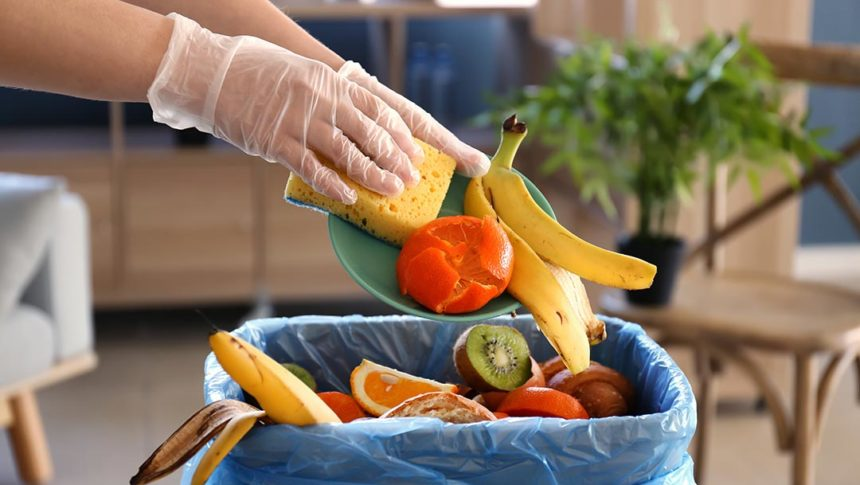

Primeira atitude que devemos praticar é reduzir o desperdicio de alimentos
Manter essa prática contribui para a escassez de recursos naturais, o aumento de emissões de gases de efeito estufa entre outros, prejudicando o meio ambiente. Para evitar o desperdício, deve-se comprar somente o necessário evitando o desperdício de alimentos e, comer todas as partes dos alimentos como, cascas entre outras, que muitas vezes são descartadas desnecesariamente.
